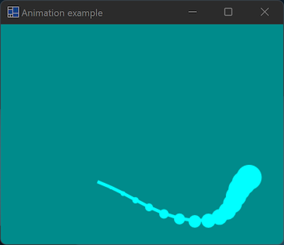
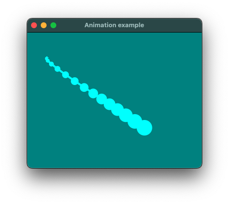

|
xtd
0.2.0
|
animation.cpp
demonstrates the use of xtd::forms::animation control.
- Windows


- macOS


- Gnome


#include <xtd/diagnostics/debug>
#include <xtd/drawing/basic_colors>
#include <xtd/drawing/colors>
#include <xtd/forms/animation>
#include <xtd/forms/application>
#include <xtd/forms/debug_form>
#include <xtd/forms/form>
using namespace std;
using namespace xtd;
using namespace xtd::drawing;
using namespace xtd::diagnostics;
using namespace xtd::forms;
namespace animation_example {
public:
form1() {
back_color(colors::dark_cyan());
client_size({360, 280});
controls().push_back(fish_animation);
fore_color(colors::cyan());
text("Animation example");
fish_animation.dock(dock_style::fill);
fish_animation.frames_per_second(60);
fish_animation.start();
fish_animation.updated += animation_updated_event_handler(*this, &form1::on_fish_animation_updated);
}
private:
fish_animation.running(!fish_animation.running());
}
e.graphics().clear(fish_animation.back_color());
static const auto fish_length = 16;
auto points = vector<point_f> {};
auto radius = 100 + 10 * sin(as<float>(fish_animation.frame_counter()) * 0.1f + as<float>(i) * 0.5f);
auto point = point_f(as<float>(e.clip_rectangle().width()) / 2.0f + 1.5f * radius * sin(as<float>(fish_animation.frame_counter()) * 0.02f + as<float>(i) * 0.12f), as<float>(e.clip_rectangle().height()) / 2.0f + 1.0f * radius * cos(as<float>(fish_animation.frame_counter()) * 0.04f + as<float>(i) * 0.12f));
e.graphics().fill_ellipse(solid_brush(fish_animation.fore_color()), point.x() - as<float>(i), point.y() - as<float>(i), 2.0f + 2.0f * as<float>(i), 2.0f + 2.0f * as<float>(i));
}
}
}
animation fish_animation;
};
}
auto main()->int {
auto df = debug_form {};
df.back_color(basic_colors::black());
df.fore_color(basic_colors::lime());
application::run(animation_example::form1 {});
}
generic_event_handler<> event_handler
Represents the method that will handle an event that has no event data.
Definition: event_handler.h:32
delegate< void(object &sender, paint_event_args &e)> paint_event_handler
Represents the method that will handle the xtd::forms::control::paint event of a control.
Definition: paint_event_handler.h:22
xtd::delegate< void(object &, const xtd::forms::animation_updated_event_args &)> animation_updated_event_handler
Represents the method that will handle the update of xtd::forms::animation.
Definition: animation_update_event_handler.h:22
xtd::forms::style_sheets::control form
The form data allows you to specify the box of a form control.
Definition: form.h:21
float as< float >(std::any value)
Casts a type into another type.
Definition: as.h:7710
@ point
Specifies a printer's point (1/72 inch) as the unit of measure.
@ text
The xtd::forms::status_bar_panel displays text in the standard font.
The xtd::diagnostics namespace provides classes that allow you to interact with system processes,...
Definition: assert_dialog_result.h:10
The xtd::drawing namespace provides access to GDI+ basic graphics functionality. More advanced functi...
Definition: actions_system_images.h:11
The xtd::forms namespace contains classes for creating Windows-based applications that take full adva...
Definition: about_box.h:13
The xtd namespace contains all fundamental classes to access Hardware, Os, System,...
Definition: system_report.h:17
Generated on Sun Oct 1 2023 07:46:00 for xtd by Gammasoft. All rights reserved.